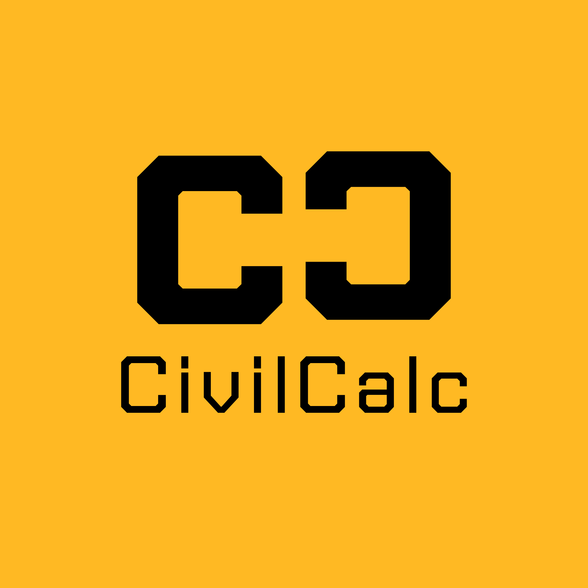

Kalkulator Teknik Sipil untuk Mahasiswa dan Praktisi
CivilCalc adalah aplikasi kalkulator teknik sipil sederhana untuk membantu perhitungan luas bangunan, volume beton, dan kebutuhan material konstruksi.
Menghitung luas bangunan dan ruangan secara cepat.
Menghitung volume beton dalam satuan meter kubik.
Menghitung estimasi kebutuhan semen beton.
Dalam perhitungan sederhana, 1 m³ beton setara dengan sekitar 8 sak semen (50 kg/sak). Nilai ini merupakan pendekatan umum dan dapat berbeda tergantung mutu beton yang digunakan.